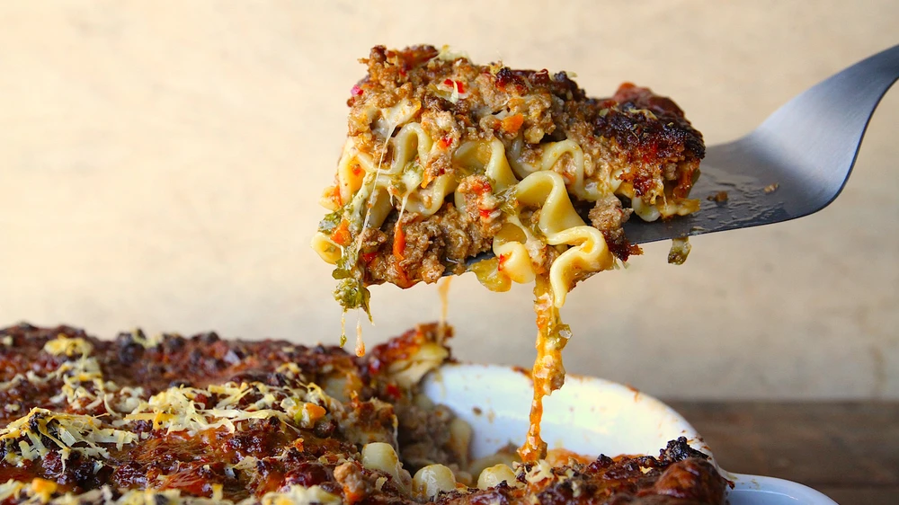

Description
You think you know lasagna? Not like this. Make like Garfield and chow down on this truly perfect lasagna from chef and host Matty Matheson.
Ingredients
- ½ cup|125 ml canola oil
- 4 pounds|1 kilogram 814 grams ground beef
- 1 cup|237 ml good olive oil
- 1 head of garlic
- 1 carrot
- 1 large onion
- ¼ cup tomato paste
- 3 tablespoons dried red chilies
- 4 ¼ cups|1 liter beef stock
- 2 cups|473 ml whole milk
- 4 large egg yolks
- 1 bunch flat-leaf parsley
- 1 box of oven ready lasagna noodles
- 3 pounds|1 kilogram 361 grams shredded mozzarella
- 8 ¾ ounce|250 gram wedge of Parmesan cheese
Steps
- Set stove top to high heat. In a large, deep cast iron or enamel pot (like a Le Creuset), pour canola oil to cover the bottom of the pot. Add the ground beef. Once the bottom is browned, continue stirring until all beef is brown— not grey—and is boiling.
- While the beef is browning, dice the garlic into a mince. Add a pinch of salt and rub your knife against it to break it down into a paste. Grate the carrot. Chop the onion into a small dice. Add the olive oil into a saucepan and sauté vegetables over medium heat until you see some caramelization (brown, but not dark brown). Once that happens, add the tomato paste and cook for another five minutes to get that raw tomato taste out of there.
- Combine veggies and tomato paste to the beef. Stir and combine to make a beautiful mix. At this point, add the chili flakes and beef stock. Bring to a boil and reduce to let every thing come together. This should take 15 minutes. Stir every 3-5 minutes so nothing burns.
- Once the stock has reduced down (you're looking for a thick sauce), add half of the milk. Reduce it down, then add the rest of the milk and reduce. Take off the heat and add the three egg yolks. Stir that in and let it emulsify into the meat. Taste for salt and pepper and adjust as necessary.
- Dice the parsley. Now it's time to assemble the lasagna. Heat the oven to 350° F.
- Ladle the meat sauce onto the bottom of your casserole dish, then lay down noodles, then another layer of meat sauce, then layer your cheese, then noodle and so on until your dish is full. Add chopped parsley to the middle layer and add grated parm on the top layer.
- Place casserole dish on a baking tray so no cheese drips over the sides and burns the bottom of the oven. Cook until golden brown on top (30-35 minutes).
- Once its golden brown, bring it to your counter and let rest for 15 minutes. Cut into squares and serve with a salad or something that will cut this meat and cheese party.
Return to top
Return to main page